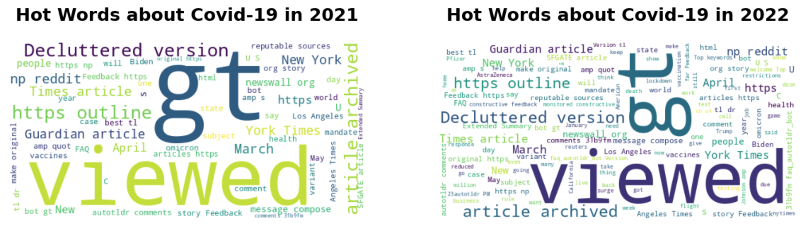

Milestone 1: EDA
In this page, we set our 10 research avenues and conduct EDA regarding the topic we want to explore.
Research Avenues
Avenue 1
Business goal: As for answering questions, would a controversial post receive more attention and support? Explore the posts for the subreddit called “AskReddit” to see if posts with controversiality are more likely to be gilded.
Technical proposal: Check the distribution of controversial posts in the subreddit in comparison to other popular subreddits; Use NLP to analyze the sentiment of posts in the subreddit and compare the distribution with that of controversiality; finally, build a machine learning model to predict whether a post is gilded or not, thus exploring the critical factors(if any).
Avenue 2
Business goal: Determine if Reddit users tend to be less active in average when they are browsing a larger subreddit, since sense of self-presence is closely related to activity and is potentially weaker in bigger forums due to presence of too many people.
Technical proposal: Group the posts by subreddits to get the count of posts for each subreddit and by author in each of the subreddits to get the total number of active users in each subreddit. Use ML techniques to formulate a model between total posts and average number of posts for each user, thus determining whether a bigger subreddit would actually suppress an individual’s willingness to make a post.
Avenue 3
Business goal: Explore the pattern of most active users. Are they posting more controversial or negative content in order to grab attention from others?
Technical proposal: Group the posts by their authors to get the 1000 most active users in reddit, then check the distribution of controversiality compared to the overall level and to determine if they are producing more controversial content. Then, use NLP on their posts to determine if they are producing negative content to grab the eyes.
Avenue 4
Business goal: What kind of accounts does Reddit tend to cancel? Negative/controversial content could naturally lead to unhealthy atmosphere, so is it also a critical factor that contributes to the deletion of a reddit account?
Technical proposal: Filter the posts whose author name is “[deleted]” to get the posts whose author’s account has been deleted, then check the ratio of posts with controversiality to see if controversial posts are potentially contributing to the deletion of accounts. Next, use NLP to determine the overall sentiment of those posts to see if deleted accounts generally post more negative content. Finally, build a ML model to see if we could predict the posts to have a deleted user or not, without actually analyzing its content.
Avenue 5
Business goal: Could Reddit posts in financial fields reflect the actual market state? Explore the potential correlation between US stock price and Reddit mood in the subreddit “wallstreetbets”, a business and financial topic.
Technical proposal: Figure out the timescale of the submission dataset, fetch the external data of US stock price trends in that period, and merge them into the dataframe. Then, use NLP to analyze the sentiment behind posts in that subreddit and aggregate in an appropriate scale to fit with the time unit of stock prices. Finally, by building an ML model, the potential correlation between Reddit mood and the stock market could be revealed a bit, if any.
Avenue 6
Business goal: If the Reddit company decides to bring more attention to subreddit “AutoNewspaper”, then explore which type of news is more welcomed by the reddit user.
Technical proposal: The favorable of the news can be reflected by the number of likes and dislikes, also by the amount of gild received. In this project, the scores column in the submission dataset computes the difference between the number of likes and the number of dislikes. Thus, the News topic with a higher score and gild level is considered to be more attractive for users. So NLP could be used to categorize news into topics and to compare the scores for each News topic posted in the subreddit “AutoNewspaper”. Then find which news topics have the highest scores in the dataset. Also, present the score with the news topics along with their average gild level.
Avenue 7
Business goal: If the Reddit company is considering holding an interactive event, then when and how should they host that event so the reddit user participation rate could be at most?
Technical proposal: In this project, the time series data record the number of participants active on reddit in both the week and day format. Then, aggregate the data into the 7 days in a week to see which day in a week would gather the most attention from the users. Also, use NLP to make a comparison between stickied and non-stickled posts regarding their average score and sentiment to see if the interactive event should be stickied or not to receive more likes from the users.
Avenue 8
Business goal: If the Reddit company decides to include more news in the subreddit “AutoNewspaper”, then which news source should they be focused on based on the steadiness of making new posts, for various types of news?
Technical proposal: Use NLP to identify the news source and type for each News posted in the subreddit “AutoNewspaper”. Then, count which news sources are mentioned the most in the dataset for each of the formulated types of news. Addtionally, the 3 most mentioned type of news for each of the news sources could be presented to help the Reddit company to decide for future cooperations.
Avenue 9
Business goal: Which of the 2 groups, adults and teenagers, consists of a more important part in the Reddit society?
Technical proposal: The age of post authors could be identified by the variable “over_18”, thus a groupby operation could be used to separate posts made by adults and by teenagers. Then, comparisons on various statistics, such as total number of posts, most popular topics, average score and gild level, etc. The techniques of Natural Language Processing could be further applied to see if teenagers in the era of covid have been expressing more struggles than the adults. Through out of these comparisons, a general understanding of teenagers’ role in the Reddit society could be revealed a bit.
Avenue 10
Business goal: Video posts have been thriving as a new type of reddit posts. What are their target users and how well do they perform in the aspect of score and awards?
Technical proposal: Filter out the video posts from the dataset by the variable “is_video” present in the submission dataset, then make comparisons between distributions of adult user ratio, score and gild level for video posts and regular posts. This could give us an idea on the target user of video posts and their overall performance comparing to other posts. Additionally, NLP may be used to reveal commentors’ tastes on the video and let us see the subreddits where video posts are welcomed/hated the most.
EDA
Basic Info
We have two dataframes including a submissions and comments data from Reddit starting from January, 2021 to August, 2022.
There are 643,255,528 rows and 68 columns in submissions dataframe. And 4,473,556,762 rows and 21 columns in comments dataframe.
More detail with the original data please check here and roll down to Basic Info section.
Data Quality Checks
We checkes the missing value, lengh of comments and remove rows which is unnecessary for our analysis.
More detail with the how we did please check here and roll down to Data Quality Checks section.
Create New Variables
- date variable: generate the date format like ‘2011-0-01’
- month variable: generate the month of the date
- hour variable: generate the hour of when comment or submission is publishes.
- day of week variable: Monday, Tuesday, Wednesday, Thursday, Friday, Saturday, Sunday(1 for Sunday, 2 for Monday,…,7 for Saturday)
- account_deleted variable: Where the author account has been deleted.
More detail with the how we did please check here and roll down to Create New Variables section.
Explore the top 20 most popular by submission and comment count
 This figure displays the top 20 most popular subreddits for submission and comment. From the figure, we could observe that:
This figure displays the top 20 most popular subreddits for submission and comment. From the figure, we could observe that:
- There exists a big difference in the topics favored by submission and comment. People tend to make a post for NSFW contents in many different 18+ subreddits while response a post for SFW contents.
- Topics about News, Sports, investment market are top of the comment count.
Explore the top 20 subreddits by subbmission count divided by age
 This figure displays the top 20 most popular subreddits for teenagers and for adults. From the figure, we could observe that:
This figure displays the top 20 most popular subreddits for teenagers and for adults. From the figure, we could observe that:
- There exists a big difference in the topics favored by teenager and adult authors. While teenagers often use Reddit to ask questions and exchange experiences&ideas among various topics, the adult authors seem to focus on posting NSFW contents in many different 18+ subreddits.
- The question-asking subreddit is mainly used by the teenagers, thus the professional level of the channel seems a bit suspicious. Maybe there are other forums for more professional questions to be asked and to be solved.
Explore submissions and comments count by different time scale
 This plot shows how reddit submission and comment count change from 2021-01-01 to 2022-8-31 on different time scale.
This plot shows how reddit submission and comment count change from 2021-01-01 to 2022-8-31 on different time scale.
- The changes of submission count and comment are not totally match each other.For example, from June to September, submisison count gradually decreases, but comment count gradually increase. Meanwhile, May is the most active month within a year for reddit.
- Within a day, the fluctuations of submission and comment count look like very similar, gradually decrease from 18:00 to the next day 08:00, and gradually increase from 08:00 to 17:00. Moreover, daily submission and comment count show a certain pattern fluctuation, which might caused by weekday and weekend.
 From the left figure:
From the left figure:
- we could observe that posts of both submissions and comments type are made most often during weekdays and less often on weekends, which seems reasonable since people might enjoy their casual time during the weekends and have no need to browse the forums on their phone which only utilizes scattered pieces of time.
From the right figure:
- we could also observe that for submission posts, teenager authors make way more posts than adult authors, while their posting behavior seems to define the pattern illustrated by the left figure, making the most posts on weekdays.
Explore wallstreetbets subredit count and stock market index
 From the figure, we could observe the change in the stock index and the number of comments and submissions:
From the figure, we could observe the change in the stock index and the number of comments and submissions:
- There is no significant relationship between stock index and the number of comment and submission.
- We will use sentiment analysis techniques in a follow-up study to examine the relationship between the content of comments and submissions and stock price data.
Explore the change of buzzwords about covid-19 from 2021 to 2022
We use regex searches for specific keywords about covid and produce dummy variables for this plot.  This is a rather raw wordcloud about covid-related posts, since the main words “gt” and “viewed” are repeated without an explicit connection to the covid topic.
However, the fact that the wordclouds look similar still provides some potential assumptions about the attitudes of Reddit users against covid. What if they have been bored enough to change their attitudes?
Further explorations could be performed by NLP to further compare the sentiment difference between 2021 and 2022.
Explore the 10 most controversial subreddits having more than 10000 comments
 From this figure, we could see that:
From this figure, we could see that:
- Popular culture (stonedswifties, media_criticism, MakingaMurderer, blndsundoll4mj), regional forum(WI_Neutral, Syracuse_comments, Ethiopia, OntatioCanada) and Politics&War(syriancivilwar, moderatepolitics) are the most controversial topics.
- WI_Neutral serves as the most controversial big subreddit with 10000+ comments, with 28% of its comments tagged as controversial, which is possibly due to the elections happening.
Explore the relationship between subreddit size and average user activities
 This figure displays the relative size of subreddits along with their average user activity defined by the average number of submission posts made by each of distinct authors in the subreddit.
This figure displays the relative size of subreddits along with their average user activity defined by the average number of submission posts made by each of distinct authors in the subreddit.
We could see a clear exponential shape of the figure, illustrating that users tend to be more active when situated in a larger web community, which seems reasonable since people usually want to grant sense of self-existence by receiving comments from others, which is definitely more easily when they express themselves in a larger community.
Explore the top 10 video-posting subreddits for teenagers and adults
| Rank | teen | adult |
|---|---|---|
| 0 | ksi | KGBTR |
| 1 | shitposting | boypussy |
| 2 | apexlegends | tiktokthots |
| 3 | aww | FreeKarma4U |
| 4 | Unexpected | assaddicts1 |
| 5 | funny | ebonyhomemade |
| 6 | nextfuckinglevel | shitposting |
| 7 | 196 | Unexpected |
| 8 | cats | lean |
| 9 | tiktokthots | The_ASSylum |
This table displays the top 10 subreddits where teenagers and adults post their videos.
From this summary table, we could observe that while adult posters tend to use video for NSFW contents, teenagers usually use video posts for spreading memes, enjoying popular culture and sharing experiences.
Besides, this table further supports one of our previous plots that suggests a difference in taste for teenagers and adults in Reddit.
| stickied | gilded | count |
|---|---|---|
| 0 | 0 | 28514 |
| 1 | 0 | 9 |
| 0 | 1 | 1 |
This table shows that whether there is any relationship between sticked comment and gilded comment in AutoNewspaper subreddit.
In the table, nealy all of the comments are unsticked and ungilded, so these two features might not be an useful direction to explore in the further step. This might provide some reference for our business about advertising action in AutoNewspaper subreddit.